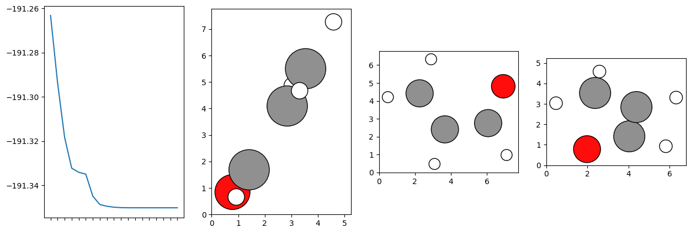

Monitor progress of geometry optimisation
[1]:
import pymolpro
acrolein=pymolpro.Project("acrolein")
acrolein.import_file("monitor_geometry_optimisation/acrolein.xyz")
method="basis,cc-pVDZ;df-hf;df-mp2"
acrolein.write_input(f"""
geometry=acrolein.xyz
{method}
optg
put,xyz,opt.xyz
""" )
acrolein.run(force=True)
[2]:
import time
from IPython.display import clear_output
import matplotlib.pyplot as plt
import ase
from ase.visualize.plot import plot_atoms
oldenergies=[]
while acrolein.status != 'completed' and acrolein.status != 'killed' and acrolein.status != 'running': time.sleep(1)
time.sleep(0.3)
while True:
energies = acrolein.energies(preamble='//jobstep[@command="OPTG"]//',method="MP2")
if energies != oldenergies:
oldenergies = energies
clear_output(wait=True)
with open("acrolein_current.xyz","w") as file:
file.write(acrolein.xyz())
fig, ax = plt.subplots(1,4, figsize=(15,5))
atoms = ase.io.read("acrolein_current.xyz")
plot_atoms(atoms, ax[1])
plot_atoms(atoms,ax[2], rotation='90z,90x')
plot_atoms(atoms,ax[3], rotation='90x,90z')
ax[0].plot(energies)
plt.sca(ax[0])
plt.xticks(range(len(energies)),[])
plt.show()
if acrolein.status == 'completed' or acrolein.status == 'killed': break
time.sleep(1)

[3]:
import ase
from ase.visualize import view
with open("acrolein_current.xyz","w") as file:
file.write(acrolein.xyz())
view(ase.io.read("acrolein_current.xyz"),viewer='x3d')
[3]: